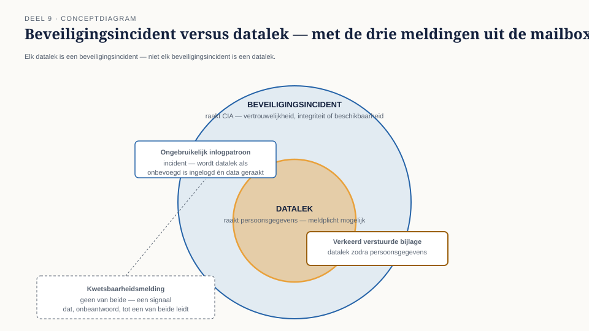
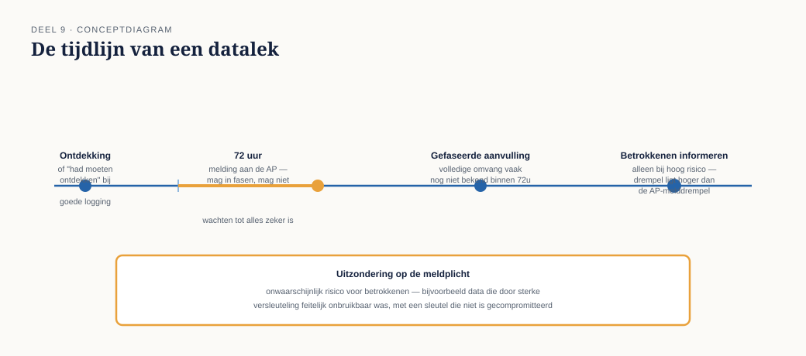
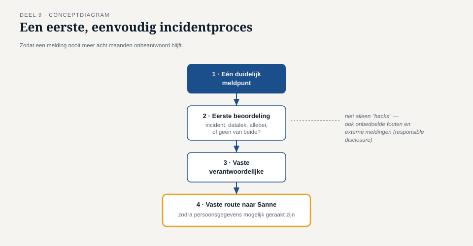

Deel 9 — Als het misgaat
Slidedeck · Ductus-cursus Informatiebeveiliging en privacy · niveau 1 · deel 9 van 10 · 22 slides
Slide 1 — Titel
Informatiebeveiliging en Privacy
Deel 9 · Niveau 1 · Fundament
Als het misgaat
Slide 2 — 340 ongelezen berichten
Het laatste onopgeloste element uit deel 1.
Drie soorten meldingen, door elkaar, nooit opgevolgd.
Slide 3 — Drie meldingen
- Verkeerd verstuurde bijlage (11 mnd oud)
- Geautomatiseerde inlogwaarschuwing (nooit bekeken)
- Externe kwetsbaarheidsmelding (8 mnd stilte)
Slide 4 — Beveiligingsincident vs. datalek

Incident: raakt CIA, altijd
Datalek: specifiek incident mét persoonsgegevens
Slide 5 — Elk datalek is een incident
Niet elk incident is een datalek.
Het onderscheid bepaalt: ontstaat er een wettelijke meldplicht?
Slide 6 — Opdracht 9.1
Vier situaties. Incident, datalek, of allebei?
Slide 7 — De 72-uursmelding

Vanaf kennisname. Niet vanaf het moment van het lek zelf.
Slide 8 — De valkuil
Slechte monitoring "reset" de klok niet.
Had een zorgvuldige organisatie het eerder moeten weten?
Dan telt die klok.
Slide 9 — Opdracht 9.2
Ontdekt maandag, gebeurd vrijdag. Vanaf wanneer loopt de klok?
Wat als monitoring het al vrijdag had moeten signaleren?
Slide 10 — Gefaseerd melden
Binnen 72 uur nog niet alles bekend?
Meld toch — met wat je weet. Vul later aan.
"Wachten tot we het zeker weten" is geen geldige reden.
Slide 11 — Opdracht 9.3
Omvang nog onbekend binnen 72 uur. Wachten of melden?
PAUZE
Slide 12 — Twee drempels
Meldplicht AP — niet onwaarschijnlijk risico (lager)
Informeren betrokkenen — hoog risico (hoger)
Niet elk AP-meldingsplichtig lek hoeft naar betrokkenen.
Slide 13 — Opdracht 9.4
Verschil uitleggen. Voorbeeld: wel AP, niet betrokkenen.
Slide 14 — Responsible disclosure
Onderzoekers die kwetsbaarheden melden — vertrouwelijk,
met tijd om te verhelpen, zonder juridisch risico voor henzelf.
Dezelfde vaardigheden als deel 2. Omgekeerde inzet.
Slide 15 — Wat er bij Meridiaan misging
Niet de melding. Acht maanden stilte.
Slide 16 — Waarom stilte niet neutraal is
Kwetsbaarheid blijft actief bruikbaar.
Onderzoeker kan besluiten: verantwoord melden heeft geen zin.
Slide 17 — Opdracht 9.5
Twee risico's van acht maanden stilte na een responsible-disclosure-melding.
Slide 18 — Een eerste incidentproces
Niet het volledige proces van deel 19.
Wel: genoeg om nooit meer 340 ongelezen berichten te hebben.

Slide 19 — Vier elementen
- Eén duidelijk meldpunt, met scope
- Verplichte, tijdige eerste beoordeling
- Vaste verantwoordelijke die opvolging bewaakt
- Vaste route naar Sanne bij persoonsgegevens
Slide 20 — Opdracht 9.6
Ontwerp een kort voorstel voor Meridiaans meldproces.
Slide 21 — Niveau 1 bijna rond
Elk element uit Merels eerste week is nu behandeld:
accounts, testomgevingen, de mailbox, Sanne's grens.
Slide 22 — Vooruitblik
Deel 10: examentraining + capstone.
Merels beveiligingsnulmeting, verdedigd voor Karin, Tarik, Sanne, Ruud.